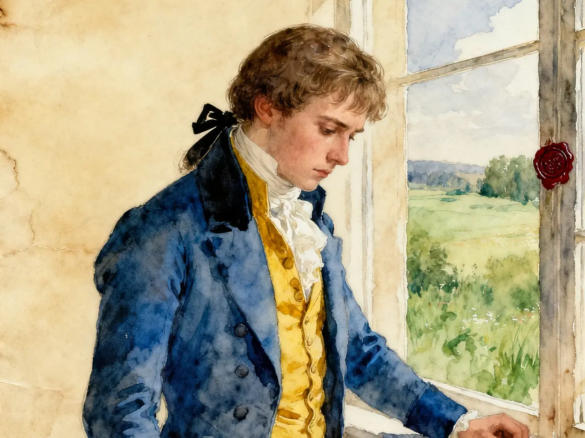
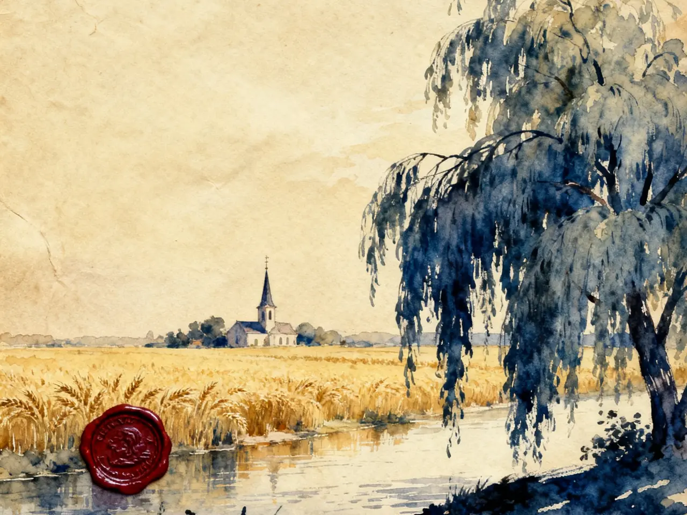
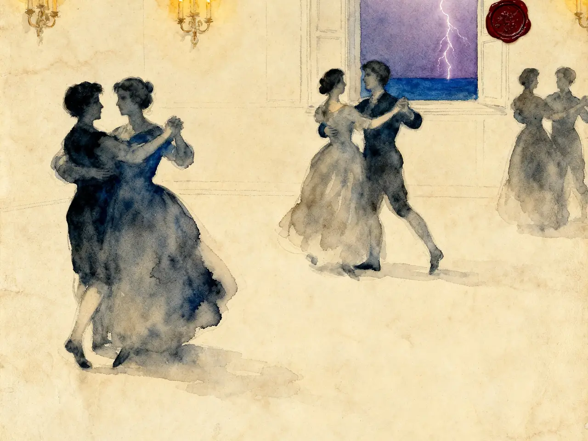
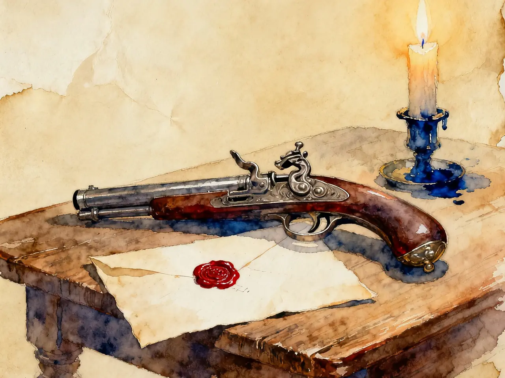
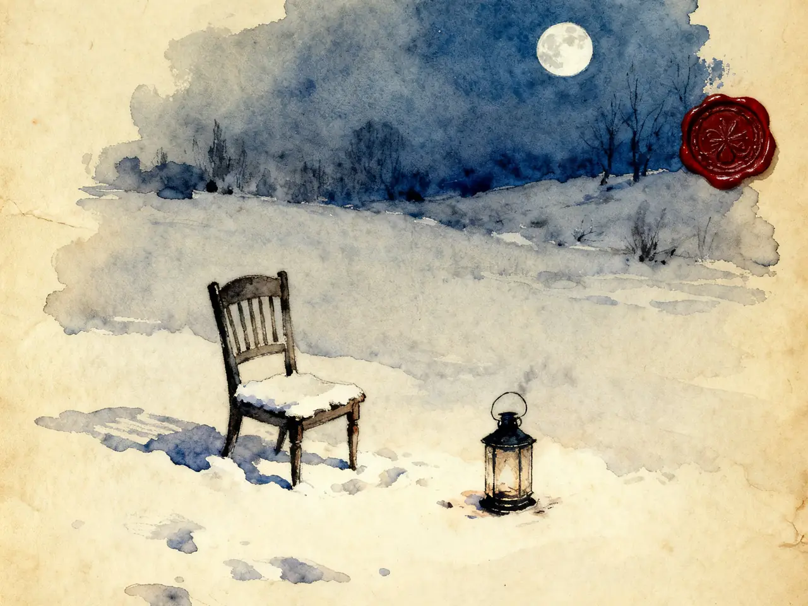
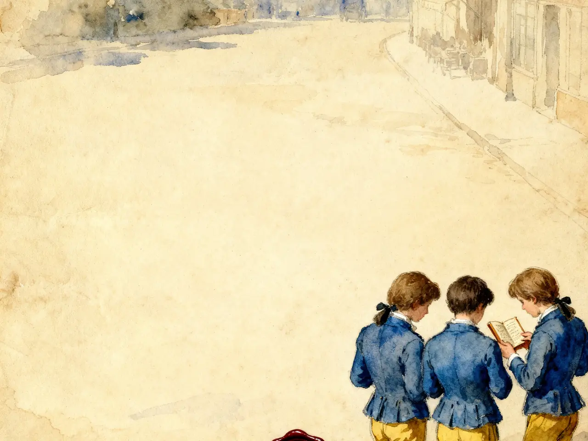

1774 年，一本小书让整个欧洲陷入狂热：青年们穿黄背心蓝外套，模仿主人公自杀，教会与政府下令查禁。250 年后的今天，我们仍在用另一个名字谈论它——"维特效应"，社会心理学研究自杀模仿的专有名词。
但真正让它不朽的不是悲剧本身，而是它写出的那种体验：在抗抑郁药出现之前一百多年，歌德已经把这种感受写了下来。

25 岁的歌德到帝国最高法院实习，在一次乡村舞会上遇见法官之女夏绿蒂·布甫，她已订婚。舞会细节（切面包、雷雨、华尔兹）后来几乎原样写进 6 月 16 日那封信。
朋友卡尔·威廉·耶路撒冷因单恋有夫之妇，借走克斯特纳的手枪自杀。歌德向当事人详细询问经过，这些材料直接进入小说的结尾。
歌德说，他写《维特》时"像个梦游者"，把内心的真实与耶路撒冷的遭遇糅合在一起，一气呵成。
一经出版即引爆"维特热"。歌德活了 82 岁，写了《浮士德》，成了魏玛的枢密顾问——维特替他死了一次。
全书是维特写给挚友威廉的信。没有叙述者，没有解释，只有一个年轻人的声音。下面这张图是 83 封信的长度分布：
第一编：1771.5.4 – 9.10 · 36 封 | 第二编：1771.10.20 – 1772.12.6 · 44 封 | 编者叙述内嵌 3 封
第一编五个月写了 36 封，密到隔日一封，越写越长；第二编一年零两个月 44 封，1772 年春夏有大段空白。到 12 月信重新变密。那是他自杀前最后二十天。
"我多么高兴，我走了！"——田园、井泉、荷马，自然的礼赞。
6/16 舞会初遇绿蒂，7/13"她爱我！"——他最高兴的一段日子。
8/12 界限之争，8/18"自然吞噬"之信，9/10 告别夜。第一编落幕。
公使职位、伯爵宴会被逐、市民与贵族之间的界线。信变得稀疏。
重返瓦尔海姆，莪相之夜，12/20 预告、12/21 绝笔，12/22 正午十二时，手枪。
紧接着是一连串自我审讯：我有没有喂养她的感情？我有没有在那些真诚的自然流露里取乐？——句句被破折号打断。然后他发誓："我要改过自新。"读者第一页就知道：这个誓言会落空。全书就是在"决心改善"和"被感觉卷走"之间来回。
"Ich könnte jetzt nicht zeichnen, nicht einen Strich, und bin nie ein größerer Maler gewesen als in diesen Augenblicken."我现在一笔也画不出来，可我从没像此刻这样，是一个更伟大的画家。Am 10. Mai ｜ 参考译文
5 月 10 日，维特躺在溪边高草里，看虫蚁的世界、感受"全能者的在场"——恰恰是在感觉最饱满的时候，他一笔也画不出来。感觉和表达之间的落差，是第一编反复出现的一个点。
"ich brauche Wiegengesang, und den habe ich in seiner Fülle gefunden in meinem Homer."我要的不是引导，是摇篮曲——我在荷马那里找到了它。Am 13. Mai ｜ 参考译文
他拒绝朋友寄书："我不要被引导、被激励。"他要的是摇篮曲，不是引导。井泉边的"族长时代"幻想、孩子的纯真、农夫少年"全身心的爱"——他先爱上的是"爱"这种状态本身。

马车赴乡村舞会，途中接绿蒂。关惠文译本这样记初见：
"在前厅里，有六个从两岁到十一岁大小的孩子簇拥在一个姑娘周围。那姑娘长得极美，中等身材，穿一件朴素的白裙，袖子和胸前装饰着浅红色的蝴蝶结。她正拿着一块黑面包，按照各人的年龄和饭量切成片，亲切地分给周围的孩子们。"六月十六日 ｜ 关惠文译

舞会上华尔兹"像天体般旋转"；雷雨中她组织孩子们"数数"转移恐惧；然后——窗前，她对维特说出一个词：
"Ich war kein Mensch mehr."我不再是人了。Am 16. Junius ｜ 参考译文
他们之间不需要解释，一个词就够了。同夜他得知：绿蒂已与阿尔贝特订婚。
阿尔贝特已归来。一次谈话中，阿尔贝特拿起维特桌上的手枪，说自杀是"软弱"。于是有了这场对话：
人的天性有承受的极限，越过即毁灭——如同高烧致死，不能算怯懦。人掉进水里被淹没，不能说"这太容易了，他怎么不爬上来"。他讲溺死的少女：被抛弃，在河边徘徊，那不是疯狂，是"为她的命运寻找出路"。
自杀就是软弱。人应当承受、应当忍耐，用理性克服激情。选择结束生命，是对责任与秩序的背叛——"一个头脑健全的人"不会这样做。

"Wir gingen auseinander, ohne einander verstanden zu haben. Wie denn auf dieser Welt keiner leicht den andern versteht."我们分手了，彼此并未理解对方。这世上本就没人容易理解另一个人。Am 12. August ｜ 参考译文
这场对话没有胜负，问题留到了今天：当一个人说"我撑不住了"，我们该回答"软弱"，还是承认人是有极限的？
"Mußte denn das so sein, daß das, was des Menschen Glückseligkeit macht, wieder die Quelle seines Elendes würde?"难道人幸福之源，必然又成为他苦难之源吗？Am 18. August ｜ 参考译文
"ich sehe nichts als ein ewig verschlingendes, ewig wiederkäuendes Ungeheuer."我什么也看不见，只看见一个永恒吞噬、永恒反刍的怪物。Am 18. August ｜ 参考译文
三个月前还是"神圣生命之流"的世界，如今成了一座"永恒敞开的坟墓之渊"。不是自然变了，是他变了——他看见的自然，就是他自己的状态。这是全书最著名的转折，也是对这种体验最早的精确描述之一：同一个自然，先滋养他，后来吞噬他。
"Was mich am meisten neckt, sind die fatalen bürgerlichen Verhältnisse."最折磨我的，是那些该死的市民等级关系。Am 24. Dezember 1771 ｜ 参考译文
第二编的主题从恋爱扩到社会：迂腐的公使、僵化的礼仪，还有伯爵晚宴：维特被当众请出，因为他是市民，贵族不愿与他同席。他站在门外，看着里面的灯火。
维特的绝望不只是感情问题。歌德写的也不是一个人的心理崩溃：等级制度、职业的压抑、看不到出路。这些都在小说里。
"Ossian hat in meinem Herzen den Humor verdrängt."莪相已从我心中挤走了欢愉。Am 10. Oktober 1772 ｜ 参考译文
重返瓦尔海姆的维特，为绿蒂朗读自己翻译的莪相《塞尔玛之歌》。读至动情处，绿蒂落泪，他抓住她的手跪倒——她对他"既恼又爱，身子不住哆嗦"，说出这句话：
"Das ist das letzte Mal! Werther! Sie sehn mich nicht wieder."这是最后一次！维特！你不会再见到我了。编者叙述 · 绿蒂语 ｜ 参考译文
还记得 6/16 窗前那声"Klopstock!"吗？同样是文学上的共鸣，第一次让他靠近她，这一次让他失去她。
"Es ist beschlossen, Lotte, ich will sterben, und das schreibe ich dir ohne romantische Überspannung, gelassen."决定了，绿蒂，我要去死。写这句话时，我没有浪漫的夸张，很平静。12 月 21 日绝笔 ｜ 参考译文
"--Sie sind geladen--es schlägt zwölfe! So sei es denn!--Lotte! Lotte, lebe wohl! Lebe wohl!"——枪已上膛——钟敲十二下！就这样吧！——绿蒂！绿蒂，别了！别了！12 月 21 日绝笔末句 ｜ 参考译文
他一生都在"决心"与"失控"之间摆动，连赴死都是。编者把细节一个个记下来：他向阿尔贝特借枪，枪是绿蒂亲手擦净递出的；桌上摊开莱辛的《爱米丽娅·迦洛蒂》；右眼上方一枪，12 月 22 日正午十二时死去，夜里十一时下葬。

没有教士为他送葬——全书最冷的句子。维特一生都在寻找中介：自然、绿蒂、莪相、上帝。最后他独自死去，拒绝一切中介。他谁也没有等到。
全欧青年模仿维特装扮（黄背心蓝外套）；"维特"成为时代符号；莱比锡书展后洛阳纸贵。
据说拿破仑行军途中七读《维特》，远征埃及时也带在身旁；后与歌德本人长谈此书。
因诱发模仿自杀之争议，在丹麦、莱比锡、米兰等地被禁或需删节出版；教会谴责。
社会学家 David Phillips 以"维特效应"命名自杀模仿现象，至今是自杀预防研究的核心概念。

"青年男子谁个不善钟情？
妙龄女人谁个不善怀春？
这是我们人性中的至洁至纯；
啊，怎么从此中有惨痛飞迸？
可爱的读者哟，你哭他，你爱他，
请从非毁之前救起他的声名；
你看呀，他出穴的精灵正在向你耳语：
请做个堂堂男子，请不要步我后尘。"歌德《绿蒂与维特》题诗 ｜ 郭沫若译（1922 年中国首个全译本卷首）
维特是自我纵容的典型：有退路（朋友劝告、公职机会、离开瓦尔海姆），却拒绝一切"改善"，把单恋升华为殉道、把自杀浪漫化。放在今天，他会被建议接受心理治疗，而不是被文学史供奉。
反对的前提是"这只是心理问题"。但小说里写清楚了他的绝望从哪里来：等级制度、职业的压抑、看不到出路。歌德写的不是一种病，是一个人怎么被他的处境推到那一步。"永恒吞噬的怪物"那一段，今天读起来依然准确。读它不是鼓励模仿，是为了理解。
读德文原文时最直接的感受是时间：第一编的信像夏天一样越写越长，第二编的像冬天的白天越来越短。信的长短和疏密，就是他的情绪本身。
歌德写完它就去了魏玛做官——他活了下来，维特替他死了。这本书，是歌德用一次文学自杀换来的余生。